SICAP, es una herramienta desktop de apoyo para la gestión de asistencia del personal para lka unidad educativa "ROTARY CLUB" se puede automatizar los procesos de registro de asistencia, ,, permisos, faltas, de todo el personal que labora en esta institucion.
Created with the Personal Edition of HelpNDoc: Free PDF documentation generator
SICAP, es una herramienta desktop de apoyo para la gestión de asistencia del personal para la unidad educativa "ROTARY CLUB" se puede automatizar los procesos de registro de asistencia, personal, faltas,
Created with the Personal Edition of HelpNDoc: Easily create Help documents
SICAP se desarrolló con tecnología LINQ.
Created with the Personal Edition of HelpNDoc: Easily create Web Help sites
Created with the Personal Edition of HelpNDoc: Single source CHM, PDF, DOC and HTML Help creation
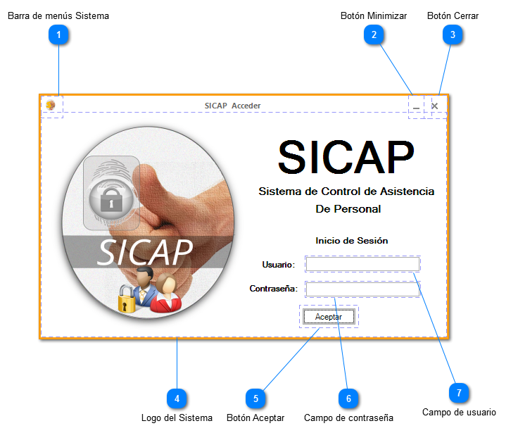
Ventana SICAP Acceder
En esta ventana le permitira al usuario acceder al sistema
1Barra de menús Sistema
Contiene comandos para manipular la ventana
2.Botón Minimizar
Quita la ventana del medio
3Botón Cerrar
Cierra la ventana
4.Logo del sistema
Muestra el logo del sistema.
4 .Botón Aceptar
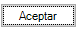
Al presionarlo nos permitira acceder al sistema y toda su funcionalidad.
5.Campo de usuario
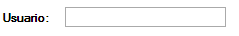
Ingresamos el nombre de usuario para poder acceder al sistema.
6Campo de contraseña
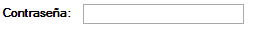
Ingresamos la contraseña de usuario para poder acceder al sistema.
Created with the Personal Edition of HelpNDoc: Full featured Help generator
Ventana SICAP 2014
Botón Gestión de Planificación
Nos permite gestionar toda la seccion de planificacion dentro de la institucion, como son los dias laborables, no laborables y calendario laboral
Botón Gestión de Ayuda
Nos muestra secciones de ayuda como el manual de usuario y acerca de
Botón Gestión de Personal
Nos permite gestionar el personal a cargo en la institucion
Botón HOME
Nos permite acceder a la ventana que aparece por defecto del programa
Botón AYUDA
Nos muestra la ayuda que ofrece el sistema para su forma de uso
Botón Gestión De Seguridad
Nos permite gestionar
Botón Gestion de reportes
Nos permite acceder a los reportes que el sistema pued generar
Botón Gestión de Asistencia
Nos permite gestionar la asistencia del personal
Área de clientes
Área de clientes
Rol de usuario
Menu de Inicio
Con esto nos permite tener un acceso rapido hacia las operaciones personales, como el home , mi perfil, cerrar sesion, y acerca de.
Botón Administración de Roles
Nos permite administrar roles para tener acceso al sistema
Botón Administración de Permisos
Nos permite gestionas los permisos que tienen lso diferentes roles para acceder al sistema
Boton Administracion de Usuarios
Nos permite adinistrar los Usuarios
Logo del sistema
Hora del sistema
Nombre del Grupo desarrollador de software
Created with the Personal Edition of HelpNDoc: Free PDF documentation generator
Entre los diferentes modulos que se puede accerde desde SICAP tenemos
• Gestión De Seguridad
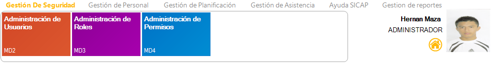
o Administración de Usuarios
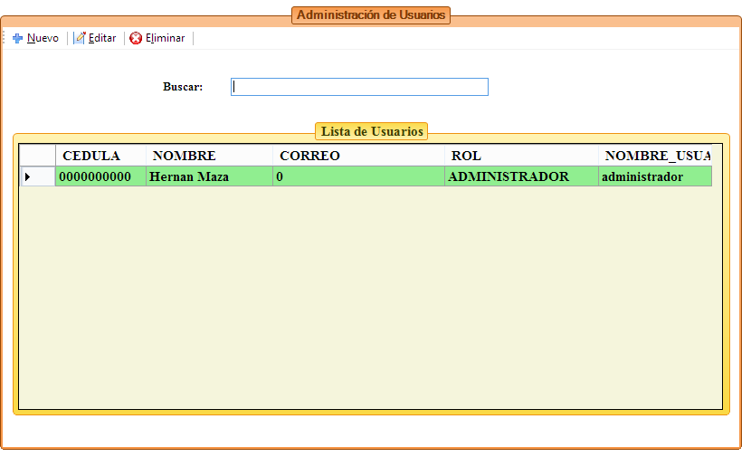
o Administración de Roles
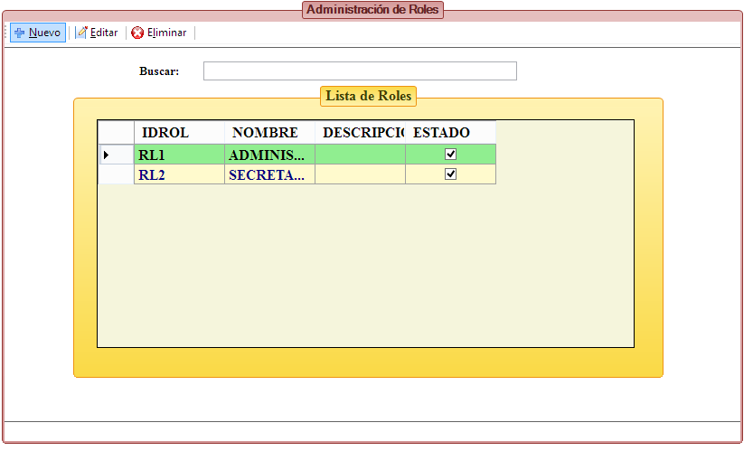
o Administración de Permisos
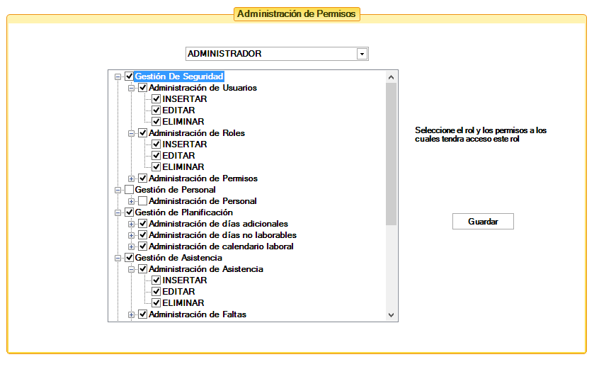
• Gestión de Personal
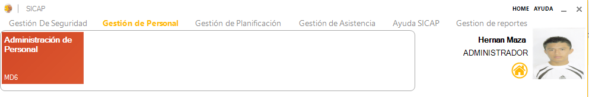
o Administración de Personal
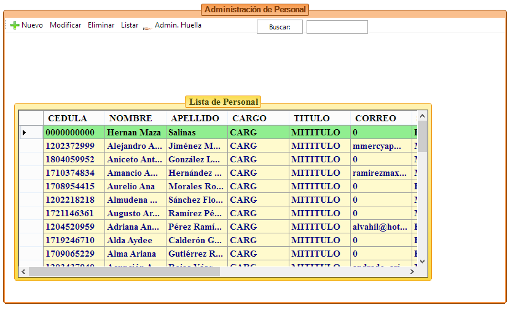
• Gestión de Planificación
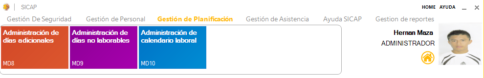
o Administración de días adicionales
o Administración de días no laborables
o Administración de calendario laboral
• Gestión de Asistencia
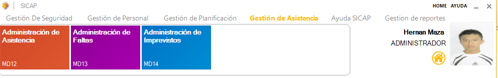
o Administración de Asistencia
o Administración de Faltas
o Administración de Imprevistos
• Ayuda SICAP

o Ayuda
o Acerca de
• Gestión de Reportes
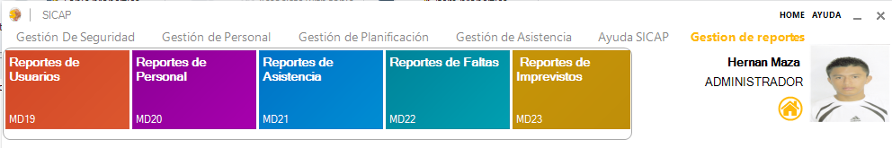
o Reporte de usuarios
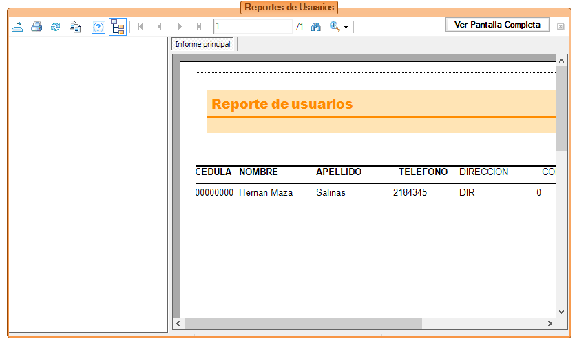
o Reporte de personal
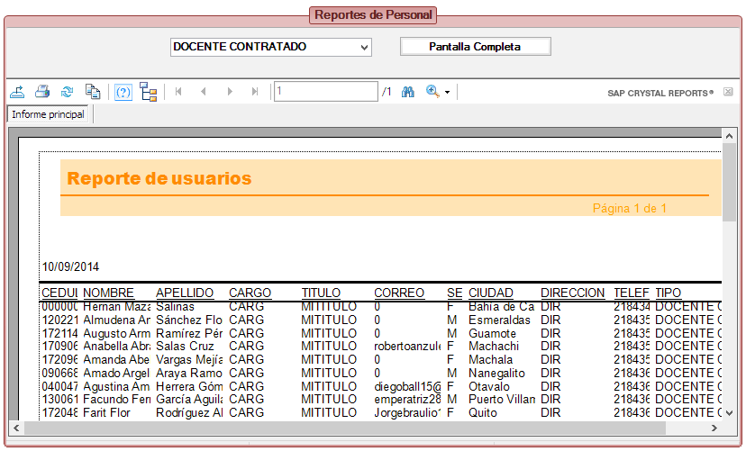
Created with the Personal Edition of HelpNDoc: Easily create iPhone documentation
Este Modulo esta encargado de Registrar la asistencia del personal, controlar lo referente a las faltas e imprevistos, que son aquellos que una persona puede alegar para poder ocupar su lugar. Este modulo nos permite el uso de un sensor biometrico automatico para registrar asistencias, y reduce incoherencias al poder realizar todo el proceso automaticamente.
Administración de Asistencia
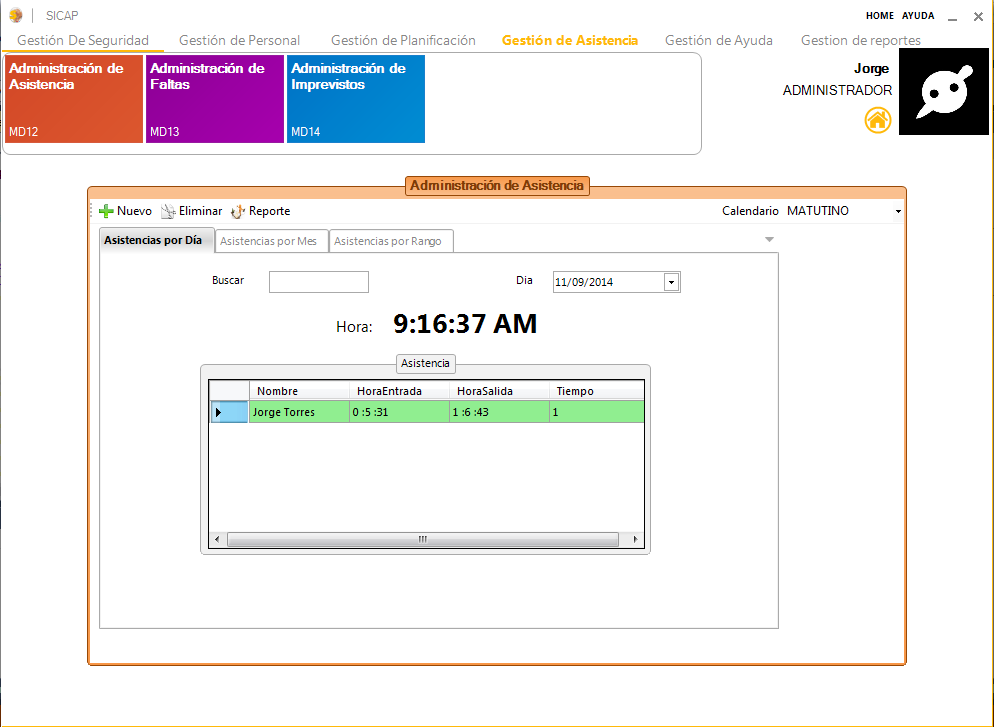
Administrar Faltas
En esta seccion tal como en la anterior se controla las faltas referente a la asistencia del usuario. Nos permite validar fechas en comun con asistencias e imprevistos, ademas de presentar una interfaz sencilla y agradable al usuario.
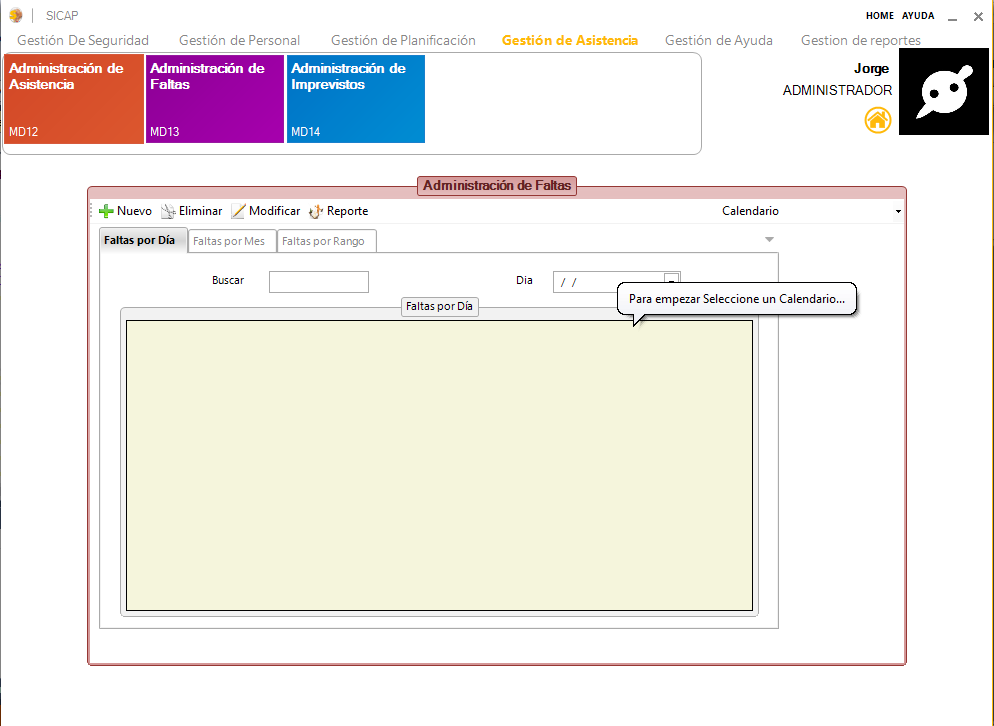
Administrar Imprevistos
Se encarga de gestionar imprevistos que el personal puede tener, las cuales se convertirán en faltas justificadas y no deben tener una asistencia en el lapso de tiempo del imprevisto, presenta un listado de todo el personal involucrado hacia el imprevisto y ademas una descripción del mismo .
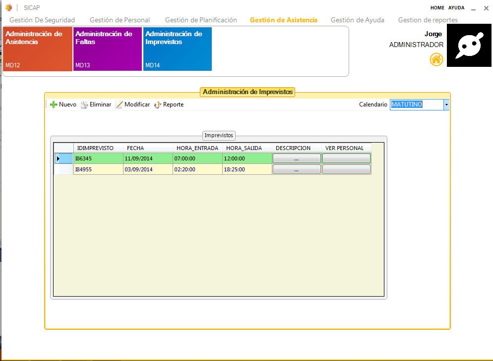
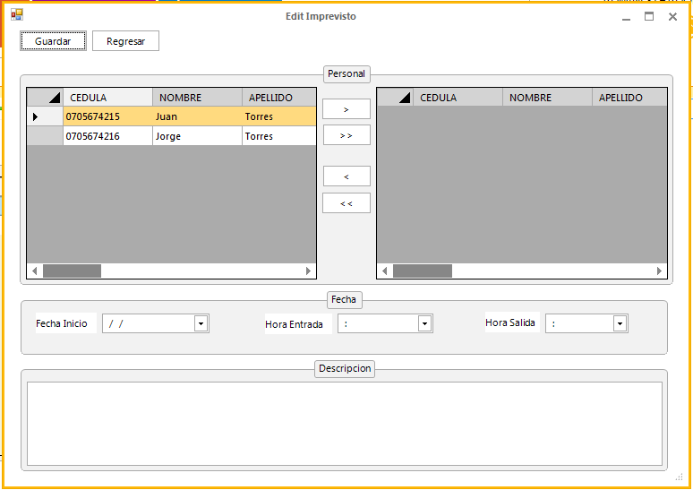
Created with the Personal Edition of HelpNDoc: Easily create iPhone documentation
En éste módulo se gestiona la administración de personal y la administración de huella dactilar.
En la administración de personal podemos registrar una nueva persona, modificar sus datos, eliminar
personas, etc, y en la administración de huella podemos agrear y eliminar huelas del personal
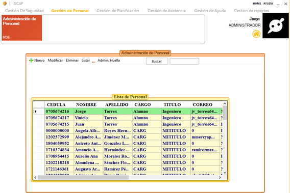
Formulario de Registro de Personal y registro de huella dactilar
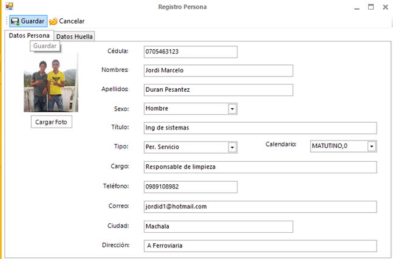
El formulario de actualización de datos de personal es similar al formulario de registro.
En la gestión de planificación encontramos tres administraciones; administracion de dias adicionales,
administración de días no laborables y la administración de calendario laboral, las cuales nos
permiten agregar dias al calendario laboral, quitar días del mismo, etc.
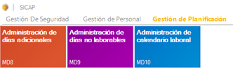
Administración de días adicionales:
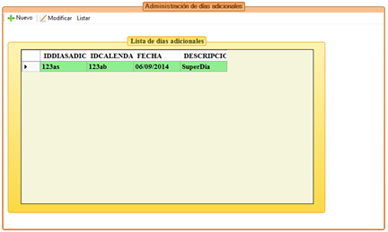
Administración de días no laborables
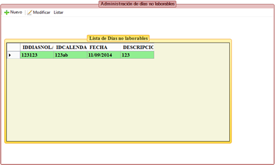
Administración de Calendario Laboral
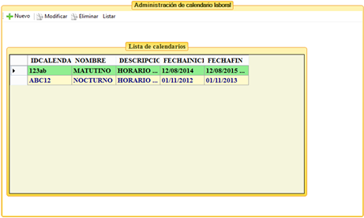
Created with the Personal Edition of HelpNDoc: Free HTML Help documentation generator
Copyright © <Dates> by <Authors>. All Rights Reserved.